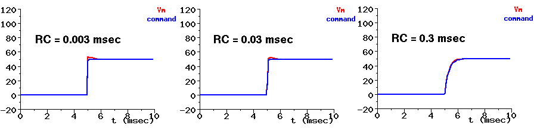

Back to the index of tutorials
Back to the index of tutorials
The GENESIS Scripts/squid simulation, by Mark Nelson, uses simulated voltage clamp circuitry constructed from a combination of the RC, diffamp and PID objects. Further information is given in the documention for these objects, and for PID in particular. The GENESIS commands to implement this are in the file squid_electronics.g. Neurokit also provides a voltage clamp for any compartment, although the code (in xout_funcs.g) is more complicated and will be harder to follow. Scripts/vclamp has a demonstration of how to use Neurokit to do a series of voltage clamp experiments.
When this circuitry is used on small cells with the default values, integration errors may occur during the nearly instantaneous change of the membrane potential as it attempts to follow changes in the clamp command voltage. These notes, which were provided by Mark Nelson, suggest strategies for "tuning" the circuitry parameters to achieve a balance of the quality of the voltage clamp against the size of the integration time step.
Here are a few things to be aware of when setting up voltage clamp circuitry ala the Squid model:
pp. 99-106) I'll outline a strategy for tuning the controller below.
Here's the strategy I suggest for tuning the voltage clamp circuitry:
time step DT
The three plots below show the Squid tutorial voltage clamp with the lowpass time RC time constant set to 0.003, 0.03, and 0.3 msec. Note that with the slowest (largest) time constant, Vm follows the command voltage well, but the rise time is slow. With RC = 0.003, there is more overshoot than with 0.03.

Back to the index of tutorials